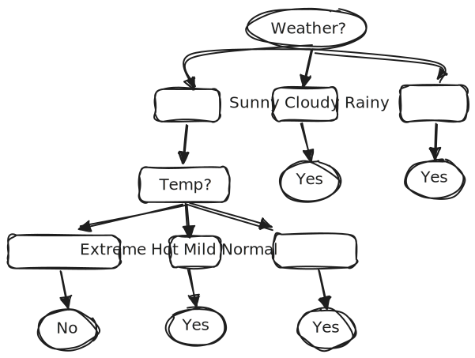
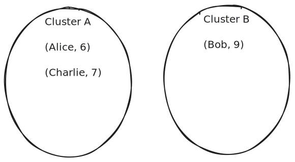

Data Mining Techniques
|
├── 1. Association Rules
│ ├── From Transaction Databases
│ ├── From Relational Databases
│ └── Correlation Analysis
│
├── 2. Classification and Prediction
│ └── Using Decision Tree Induction
│
└── 3. Clustering Techniques
├── Introduction to Clustering
├── Partition Method
└── Hierarchical Method
- Once you understand what data mining is, the next step is learning how to actually discover patterns in data — and that’s where Data Mining Techniques come in. These techniques are like different tools in your toolbox, each made for digging out a specific kind of insight.
- We’ll start with Association Rules, which help uncover interesting relationships between items — like figuring out that people who buy bread often buy butter too. You’ll learn how these rules are mined from transactional databases (like shopping records) and relational databases, and how to measure the strength of these relationships using correlation analysis.
- Next, we move on to Classification and Prediction, where you’ll see how data can be used to predict outcomes — for example, classifying emails as spam or not spam. Here, we focus on a popular method called decision tree induction, which builds flowchart-like models for decision making.
- Finally, you’ll dive into Clustering Techniques, where the goal is to group similar data points together. You’ll explore the basics of clustering, and two main approaches: the partition method (like k-means clustering) and the hierarchical method (which builds nested clusters).
Association Rules – Discovering Item Relationships in Data
- Association rule mining is a data mining technique used to identify interesting relationships or patterns between items in large datasets. It aims to find rules that predict the occurrence of an item based on the occurrences of other items.
- Association rules are widely applied in market basket analysis, where the objective is to determine which items are frequently purchased together by customers.
Association Rule Mining in Transactional Databases
Consider a transaction database of a retail grocery store, where each transaction records a set of items purchased by a customer during a single visit.
A sample of such a database is shown below:
| Transaction ID | Items Bought |
|---|---|
| 1 | Bread, Milk |
| 2 | Bread, Diaper, Beer |
| 3 | Milk, Diaper, Beer, Cola |
| 4 | Bread, Milk, Diaper, Beer |
| 5 | Bread, Milk, Diaper, Cola |
From this dataset, we can identify recurring combinations of items. For example, customers who purchase both Bread and Milk also tend to purchase Diapers. This relationship is expressed as an association rule:
\( \text{Bread} \land \text{Milk} \Rightarrow \text{Diaper} \)
The usefulness and strength of such a rule are measured using:
- Support: How often the itemset appears in the dataset.
- Confidence: Likelihood of buying the consequent (e.g., Diaper) given the antecedent (e.g., Bread and Milk).
- Lift: Indicates how much more often the consequent is bought with the antecedent than expected. Lift > 1 suggests a positive association.
These metrics help determine whether a rule is meaningful or coincidental.
Apriori Algorithm for Association Rule Mining
Now that we understand what association rules are and how they reveal patterns in data, the next question is: How do we find these rules?
That’s where the Apriori Algorithm comes in. It is a foundational technique used to automatically generate frequent itemsets and discover association rules from large datasets efficiently.
Introduction
Association Rule Mining is commonly used in Market Basket Analysis to discover patterns such as:
- Which items are purchased together
- Likelihood of selling items together
- If item X is bought, how likely is item Y also bought?
Problem Statement
Given transaction data, generate association rules like:
\( X \Rightarrow Y \)
This means: If X is purchased, then Y is also likely purchased.
Key Parameters
- Minimum Support: 50%
- Minimum Confidence: 75%
Sample Dataset
| Transaction ID | Items |
|---|---|
| T1 | Bread, Butter, Milk |
| T2 | Bread, Butter, Jam |
| T3 | Bread, Milk, Juice |
| T4 | Curd, Milk, Juice |
| T5 | Bread, Butter, Milk, Juice |
Total Transactions: 5
Understanding Itemsets (Quick Note)
Note: An itemset just means a group of items that appear
together in a transaction.
– A 1-itemset is a single item (like Bread).
– A 2-itemset is a pair of items (like Bread and Milk).
– A 3-itemset is a group of three items (like Bread, Milk, and Juice).
We look for these sets in the data and check how often they appear (called support). If they
appear frequently, we keep them. If not, we drop them.
Step 1: 1-Itemsets and Support
Goal: First, we list all individual items (1-itemsets) and count how many transactions they appear in.
Support is calculated using the formula:
\( \text{Support} = \left(\frac{\text{Item Count}}{\text{Total Transactions}}\right) \times 100\% \)
Total Transactions = 5
- Bread appears in T1, T2, T3, and T5 → that’s 4 transactions → 4/5 = 80%
- Butter appears in T1, T2, and T5 → 3 transactions → 3/5 = 60%
- Jam appears in only T2 → 1 transaction → 1/5 = 20%
- Milk appears in T1, T3, T4, and T5 → 4 transactions → 4/5 = 80%
- Juice appears in T3, T4, and T5 → 3 transactions → 3/5 = 60%
- Curd appears in only T4 → 1 transaction → 1/5 = 20%
Minimum Support = 50%. So we remove items with less than 50% support.
Frequent 1-Itemsets: Bread (80%), Butter (60%), Milk (80%), Juice (60%)
These are called frequent because they appear in at least 50% of transactions.
Step 2: 2-Itemsets and Support
Now we combine the frequent 1-itemsets in pairs and check how often those pairs occur together in transactions.
Only combinations of previously frequent 1-itemsets are considered (Bread, Butter, Milk, Juice).
- {Bread, Milk} appears in T1, T3, T5 → 3 transactions → 3/5 = 60%
- {Milk, Juice} appears in T3, T4, T5 → 3 transactions → 3/5 = 60%
- {Bread, Butter} appears in T1, T2, T5 → 3 transactions → 3/5 = 60%
- {Butter, Milk} appears in T1, T5 → 2 transactions → 2/5 = 40% (not frequent)
- {Bread, Juice} appears in T3, T5 → 2 transactions → 2/5 = 40% (not frequent)
- {Butter, Juice} appears in T5 only → 1 transaction → 1/5 = 20% (not frequent)
Again, we apply the minimum support = 50%.
Frequent 2-Itemsets: {Bread, Milk}, {Milk, Juice}, {Bread, Butter}
Step 3: 3-Itemsets and Support
Now we form groups of 3 items from the frequent 2-itemsets.
Only valid combinations from previous frequent sets are checked:
- {Bread, Milk, Juice} appears in T3 and T5 → 2 transactions → 2/5 = 40%
- {Bread, Milk, Butter} appears in T1 and T5 → 2 transactions → 2/5 = 40%
Both are less than 50%, so they are not frequent.
Frequent 3-Itemsets: None
Step 4: Association Rules and Confidence
Now we take the frequent 2-itemsets and generate rules like X → Y.
Confidence is calculated using:
\( \text{Confidence}(X \Rightarrow Y) = \frac{\text{Support}(X \cup Y)}{\text{Support}(X)} \times 100\% \)
- Bread → Milk: Support(Bread ∪ Milk) = 60%, Support(Bread) = 80% → 60/80 = 75%
- Milk → Bread: Support(Milk ∪ Bread) = 60%, Support(Milk) = 80% → 60/80 = 75%
- Milk → Juice: Support(Milk ∪ Juice) = 60%, Support(Milk) = 80% → 60/80 = 75%
- Juice → Milk: Support(Juice ∪ Milk) = 60%, Support(Juice) = 60% → 60/60 = 100%
Final Valid Rules (Confidence ≥ 75%)
| Rule | Confidence | Interpretation |
|---|---|---|
| Bread → Milk | 75% | 75% of the time, when Bread is bought, Milk is also bought |
| Milk → Bread | 75% | 75% of the time, when Milk is bought, Bread is also bought |
| Milk → Juice | 75% | 75% of the time, when Milk is bought, Juice is also bought |
| Juice → Milk | 100% | 100% of the time, when Juice is bought, Milk is always bought |
Insights
- Strongest Rule: Juice → Milk (100%) — Milk is always bought when Juice is bought.
- Moderate Associations: Bread ↔ Milk, Milk ↔ Juice (75%)
- Business Tip: Promote or bundle Milk and Juice together, as they have a strong association.
Algorithm Summary
- Find 1-itemsets → calculate support → apply threshold
- Generate k-itemsets → calculate support → filter
- Repeat until no frequent itemsets
- Generate association rules from frequent itemsets
- Calculate confidence for each rule
- Filter rules by confidence threshold
- Interpret valid rules for business use
This process uncovers strong purchasing patterns and aids in data-driven decisions for retail and e-commerce.
Association Rule Mining in Relational Databases
- In many real-world scenarios, data is not stored as simple itemsets within a single table. Instead, it is often organized in the form of relational databases, which consist of multiple interconnected tables.
- For example, a business may store customer-related data in one table (Customers), transaction details in another (Orders), and product information in a third (Products).
- In such cases, association rule mining can be extended beyond basic itemset analysis to discover complex patterns involving multiple attributes and relationships.
-
A representative association rule derived from relational data could be:
- “Customers aged 25–34 who purchase protein bars also tend to purchase bottled water.”
- This rule incorporates structured information drawn from multiple sources: age from the Customers table and purchase behavior from the Orders table.
- As such, relational association rules are often more informative and context-aware, allowing the discovery of deeper, attribute-driven insights.
- However, these rules tend to be more complex to generate and require careful data preprocessing, including table joins, attribute selection, and normalization.
Correlation Analysis – Understanding If Patterns Are Truly Related
In data mining, we often find patterns using association rules. These rules tell us which items are frequently bought together. However, frequent co-occurrence does not always mean a real relationship exists between the items. This is where correlation analysis comes in.
Why Correlation Analysis?
- Sometimes, rules like "Toothpaste → Bananas" appear in data. But this could just be a coincidence.
- Correlation analysis helps check whether such patterns are actually meaningful or just random.
- It measures the strength and direction of the relationship between two items or variables.
- This makes sure businesses use only useful rules for decisions like product placement or bundling offers.
Key Types of Correlation
- Positive Correlation: Both variables increase together
- Negative Correlation: One increases, the other decreases
- No Correlation: Variables change independently
Correlation Coefficient (Pearson’s r)
The Pearson correlation coefficient (\( \gamma \) or \( r \)) tells how strongly and in what direction two variables are related.
\[ \gamma(A,B) = \frac{\sum (A - \bar{A})(B - \bar{B})}{(n-1) \cdot \sigma_A \cdot \sigma_B} \]
- \( \bar{A} \): Mean of A
- \( \bar{B} \): Mean of B
- \( \sigma_A \), \( \sigma_B \): Standard deviations
- \( n \): Number of tuples in the data
Interpretation of Values
| Value | Interpretation |
|---|---|
| +1 | Perfect positive correlation |
| 0 | No correlation |
| -1 | Perfect negative correlation |
Step-by-Step Calculation
Step 1: Calculate Means
\( \bar{A} = \frac{\sum A}{n} \), \( \bar{B} = \frac{\sum B}{n} \)
Step 2: Calculate Sample Standard Deviation
\[ \sigma = \sqrt{\frac{\sum (x - \bar{x})^2}{n - 1}} \]
Step 3: Apply the Correlation Formula
Plug in all values into the main formula for \( \gamma(A,B) \)
Worked Example
| A | B |
|---|---|
| 20 | 8 |
| 12 | 34 |
| 9 | 4 |
Step 1: Calculate means
- \( \bar{A} = \frac{20 + 12 + 9}{3} = 13.66 \)
- \( \bar{B} = \frac{8 + 34 + 4}{3} = 15.33 \)
Step 2: Calculate standard deviations
\[ \sigma_A = \sqrt{\frac{(6.34)^2 + (-1.66)^2 + (-4.66)^2}{2}} = \sqrt{32.34} = 5.68 \] \[ \sigma_B = \sqrt{\frac{(-7.33)^2 + (18.67)^2 + (-11.33)^2}{2}} = \sqrt{265.34} = 16.28 \]
Step 3: Apply correlation formula
\[ \gamma(A,B) = \frac{(6.34)(-7.33) + (-1.66)(18.67) + (-4.66)(-11.33)}{2 \cdot 5.68 \cdot 16.28} \\ = \frac{-46.48 - 30.99 + 52.80}{184.94} = \frac{-24.67}{184.94} \approx -0.13 \]
Conclusion
- \( \gamma(A,B) \approx -0.13 \) suggests a weak negative correlation.
- If \( \gamma \approx -1 \), then it's a strong inverse relationship.
Applications in Data Mining
- Filtering out random associations from association rule mining
- Feature selection: removing redundant features
- Improving model accuracy by using only meaningful variable relationships
Classification and Prediction – Making Smart Decisions from Data
- Alright, so we just talked about how association rules help us find patterns, like "People who buy bread and milk also buy diapers." But what if you want to predict something? Like, based on a customer's previous shopping behavior, can we guess what they might buy next? Or in a medical setting, can we predict if a patient has a disease based on their symptoms?
- That's where Classification and Prediction come into play. These techniques help us categorize data into classes (classification) or predict continuous values (prediction). For now, let's focus on classification using one popular method called Decision Tree Induction.
Introduction to Decision Tree (Classifier)
What is a Decision Tree?
- A Decision Tree is a type of algorithm mainly used for classification, though it can also be used for regression tasks.
- A Decision Tree helps us take decisions based on data. It breaks a large decision into smaller ones by checking attributes (conditions) step-by-step.
- It mimics human decision-making.
- Real-life example:
- "Is the email spam or not spam?" → This is a binary classification.
Example: Higher Studies Decision Using Decision Tree
- Imagine you're a final-year B.Tech student, and you're confused:
- Should I go for higher studies or not?
- Let’s structure this into a Decision Tree
- This is a simplified example of how we can structure a decision logically using a tree.
- We can add more conditions too. For example:
- Instead of just "Placed", we can consider Package Value:
- Package High → No (Don’t go for higher studies)
- Package Low → Consider going for higher studies

Why Use a Decision Tree?
- When we have training data (sample data from students), we want to classify future decisions.
- Based on this data, the Decision Tree model learns how to take decisions.
- Example: Whether a student should go for higher studies or not can be predicted using their placement status, GATE result, etc.
Core Concepts Behind Decision Tree
- You can’t just split based on any attribute randomly. There is math behind it.
Key Terms:
- Entropy
- Measures the impurity or randomness in data.
- Information Gain
- Tells us how much useful info we get after splitting the data on an attribute.
How It Works:
- Calculate Entropy of the full dataset.
- Calculate Information Gain for each attribute.
- The attribute with the highest information gain becomes the Root Node.
- Repeat the process for further splits (child nodes).
Weather Example (Real-Life Decision)
- Let’s take another decision-making scenario: "Should I play football today?" 
- Interpretation:
- If it's cloudy or rainy, → "Yes, go play."
- If it’s sunny, check temperature:
- Extreme Hot → No
- Mild or Normal → Yes
- The final decisions (Yes/No) are called Leaf Nodes.
Structure of a Decision Tree
[Root Node]
|
---------------
| | |
[Decision Nodes] (attributes)
| |
[Leaf Nodes] → Final decisions (Yes/No)Extra Concept: Pruning (To Simplify Tree)
- Sometimes the tree becomes too complex, with unnecessary branches.
- Pruning = Removing those unnecessary parts.
- Helps in avoiding overfitting (making the model too specific to training data).
Clustering Techniques
- Clustering is a fundamental technique in data mining that aims to group a set of data objects into clusters, such that objects within the same cluster are more similar to each other than to those in other clusters. It is considered an unsupervised learning method because it does not rely on predefined class labels; instead, the algorithm discovers inherent groupings in the data based on similarity measures.
- In clustering, the main objective is to identify natural groupings or patterns in a dataset, enabling analysts to gain insights or simplify further processing. Unlike classification, where the outcome classes are known in advance, clustering algorithms work without prior knowledge of the data labels.
- Types of Clustering Methods:
Clustering methods can be broadly classified into:- Partitioning Methods: Divide data into k non-overlapping Subsets.
- Hierarchical Methods: Create a tree-like structure (dendogram) of nested clusters.
Partition Method
Partition methods construct k partitions (clusters) of the data, where each data point belongs to exactly one cluster. The goal is to find the optimal grouping of data points such that:
- Each group (cluster) is internally cohesive (data points in the same group are similar),
- And externally separated (data points in different groups are dissimilar).
K-Means Clustering
K-Means is one of the most popular clustering algorithms used to group similar data points into clusters. It is mainly used in clustering problems where we don't have labeled data. The goal is to divide the data into K groups (clusters) based on similarity.
Key Concepts
- Centroid: The center of a cluster.
- K: Number of clusters we want to form.
- Euclidean Distance: The distance between a data point and a centroid.
How K-Means Works (Incremental Method)
- Step 1: Choose the number of clusters K.
- Step 2: Randomly initialize K centroids.
- Step 3: Go through each data point one by one:
- Assign it to the nearest centroid (based on distance).
- Immediately update the centroid of that cluster using the mean of current members.
- Step 4: Repeat this for all points. Optionally loop again if needed.
Distance Formula (1D)
When using just one feature like Shoe Size, distance between two points is the absolute difference:
\( d = |x_2 - x_1| \)
Example Dataset
Consider the following dataset of clients and their shoe sizes:
| Client | Shoe Size |
|---|---|
| Alice | 6 |
| Bob | 9 |
| Charlie | 7 |
| Diana | 5 |
| Edward | 8 |
| Fiona | 10 |
| George | 11 |
K-Means (K = 2)
- Step 1: Choose K = 2 (we want 2 clusters).
- Step 2: Randomly select initial centroids:
- Centroid A = Alice = 6
- Centroid B = Bob = 9

Step-by-Step Assignment & Updating
- Point Charlie = 7:
- Distance to A = |7 - 6| = 1
- Distance to B = |7 - 9| = 2
- → Assign to Cluster A
- Update Centroid A = Average of (6, 7) = 6.5 
- Point Diana = 5:
- Distance to A = |5 - 6.5| = 1.5
- Distance to B = |5 - 9| = 4
- → Assign to Cluster A
- Update Centroid A = Average of (6, 7, 5) = 6
- Point Edward = 8:
- Distance to A = |8 - 6| = 2
- Distance to B = |8 - 9| = 1
- → Assign to Cluster B
- Update Centroid B = Average of (9, 8) = 8.5
- Point Fiona = 10:
- Distance to A = |10 - 6| = 4
- Distance to B = |10 - 8.5| = 1.5
- → Assign to Cluster B
- Update Centroid B = Average of (9, 8, 10) = 9
- Point George = 11:
- Distance to A = |11 - 6| = 5
- Distance to B = |11 - 9| = 2
- → Assign to Cluster B
- Update Centroid B = Average of (9, 8, 10, 11) = 9.5


Final Clusters (After All Points)
- Cluster A (Centroid ≈ 6): Alice, Charlie, Diana
- Cluster B (Centroid ≈ 9.5): Bob, Edward, Fiona, George
Euclidean Distance Formula
This formula is used to measure how far two points are from each other in a 2D space (like age and amount):
\( d = \sqrt{(x_2 - x_1)^2 + (y_2 - y_1)^2} \)
Example Dataset
Let’s consider the following dataset:
| Client | Age | Amount |
|---|---|---|
| C1 | 20 | 500 |
| C2 | 40 | 1000 |
| C3 | 30 | 800 |
| C4 | 18 | 300 |
| C5 | 28 | 1200 |
| C6 | 35 | 1400 |
| C7 | 45 | 1800 |
K-Means (K = 2)
- Step 1: Choose K = 2 (we want 2 clusters).
- Step 2: Randomly select 2 initial centroids:
- Centroid A = C1 = (20, 500)
- Centroid B = C2 = (40, 1000)
Step-by-Step Assignment & Updating
- Point C3 = (30, 800):
- Distance to A = √((30 - 20)² + (800 - 500)²) = √(100 + 90000) = √90100 ≈ 300.17
- Distance to B = √((30 - 40)² + (800 - 1000)²) = √(100 + 40000) = √40100 ≈ 200.25
- → Assign to Cluster B
- Update Centroid B = Average of (40,1000) and (30,800) = (35, 900)
- Point C4 = (18, 300):
- Distance to A = √((18 - 20)² + (300 - 500)²) = √(4 + 40000) = √40004 ≈ 200.01
- Distance to B = √((18 - 35)² + (300 - 900)²) = √(289 + 360000) = √360289 ≈ 600.24
- → Assign to Cluster A
- Update Centroid A = Average of (20,500) and (18,300) = (19, 400)
- Point C5 = (28, 1200):
- Distance to A = √((28 - 19)² + (1200 - 400)²) = √(81 + 640000) = √640081 ≈ 800.05
- Distance to B = √((28 - 35)² + (1200 - 900)²) = √(49 + 90000) = √90049 ≈ 300.08
- → Assign to Cluster B
- Update Centroid B = Avg of (40,1000), (30,800), (28,1200) = (32.67, 1000)
- Point C6 = (35, 1400):
- Distance to A = √((35 - 19)² + (1400 - 400)²) = √(256 + 1000000) = √1000256 ≈ 1000.13
- Distance to B = √((35 - 32.67)² + (1400 - 1000)²) = √(5.45 + 160000) = √160005.45 ≈ 400.01
- → Assign to Cluster B
- Update Centroid B = Avg of C2, C3, C5, C6 = (40+30+28+35)/4 = 133/4 = 33.25 and (1000+800+1200+1400)/4 = 4400/4 = 1100
- → New Centroid B = (33.25, 1100)
- Point C7 = (45, 1800):
- Distance to A = √((45 - 19)² + (1800 - 400)²) = √(676 + 1960000) = √1960676 ≈ 1400.24
- Distance to B = √((45 - 33.25)² + (1800 - 1100)²) = √(138.06 + 490000) = √490138.06 ≈ 700.10
- → Assign to Cluster B
- Update Centroid B = Avg of C2, C3, C5, C6, C7 = (40+30+28+35+45)/5 = 178/5 = 35.6 and (1000+800+1200+1400+1800)/5 = 6200/5 = 1240
- → Final Centroid B = (35.6, 1240)
Final Clusters (After All Points)
- Cluster A (Centroid ≈ 19, 400): C1, C4
- Cluster B (Centroid ≈ 35.6, 1240): C2, C3, C5, C6, C7

Hierarchical Clustering
Hierarchical clustering builds a hierarchy of clusters. Unlike K-Means, it does not require choosing the number of clusters (K) beforehand. There are two main approaches:
Types of Hierarchical Clustering
- Agglomerative (Bottom-Up): Start with each point as its own cluster, and keep merging the closest pairs until one cluster remains.
- Divisive (Top-Down): Start with all points in one cluster, and keep splitting it into smaller clusters.
Distance Measurement (Linkage Methods)
- Single Linkage: Distance between the closest pair of points in two clusters.
- Complete Linkage: Distance between the farthest pair of points in two clusters.
- Average Linkage: Average of all pairwise distances between points in two clusters.
Example: Agglomerative Clustering
Given 1D data points: [1, 5, 8, 10, 19, 20]
Step-by-step using single linkage:
- Start with each point as its own cluster:
[1], [5], [8], [10], [19], [20] - Find the closest pair (minimum distance):
Distance(19, 20) = 1 → Merge → [19, 20] - Next closest:
Distance(8, 10) = 2 → Merge → [8, 10] - Next closest:
Distance(5, 8) = 3 → Merge → [5, 8, 10] - Next closest:
Distance(1, 5) = 4 → Merge → [1, 5, 8, 10] - Final merge:
Distance(10, 19) = 9 → Merge all → [1, 5, 8, 10, 19, 20]

Dendrogram
A dendrogram is a tree-like diagram that shows the sequence of merges (or splits). You can “cut” the dendrogram at any level to get the desired number of clusters.
Divisive Clustering (Top-Down)
This method starts with all points in one big cluster and splits them recursively. It's less common and computationally heavier than agglomerative.
Steps:
- Start with all points in one cluster: [1, 5, 8, 10, 19, 20]
- Split into two clusters based on large distance gap → [1, 5, 8, 10] and [19, 20]
- Keep splitting each sub-cluster until each point is separate.

Advantages
- No need to pre-define K (number of clusters).
- Produces a full cluster hierarchy.
- Works well with small datasets and dendrograms help visualize structure.
Limitations
- Computationally expensive for large datasets.
- Not suitable for streaming or dynamic data.
- Once a merge/split happens, it can't be undone.
Note:
Use libraries like scipy.cluster.hierarchy in Python to create dendrograms and perform clustering automatically.